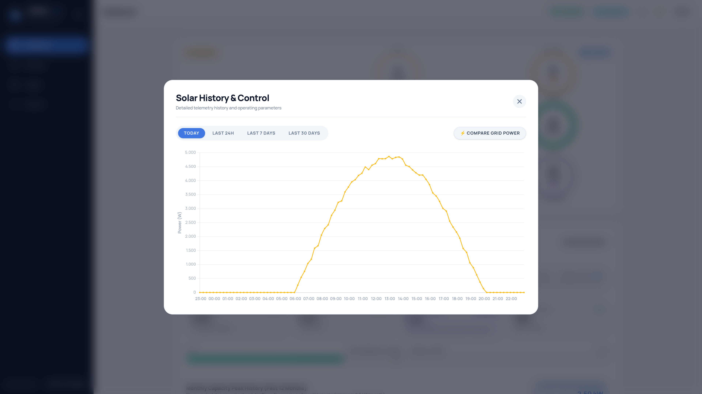
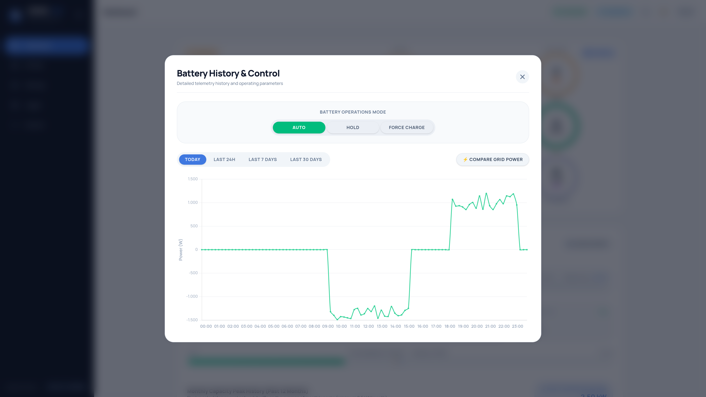
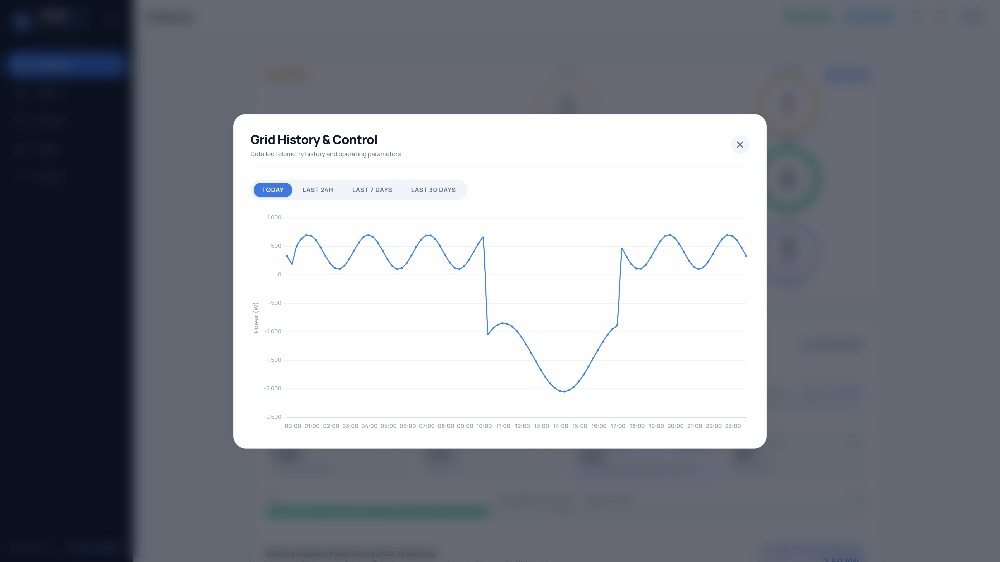
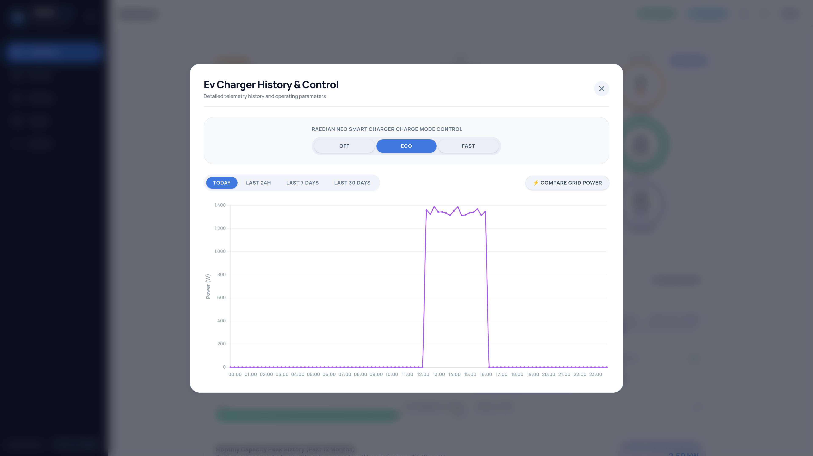
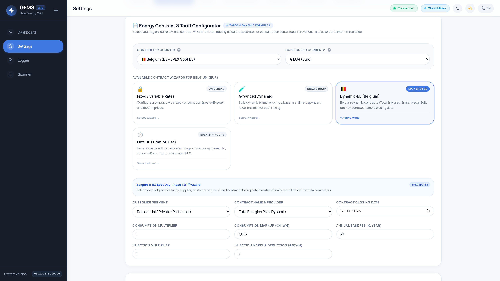
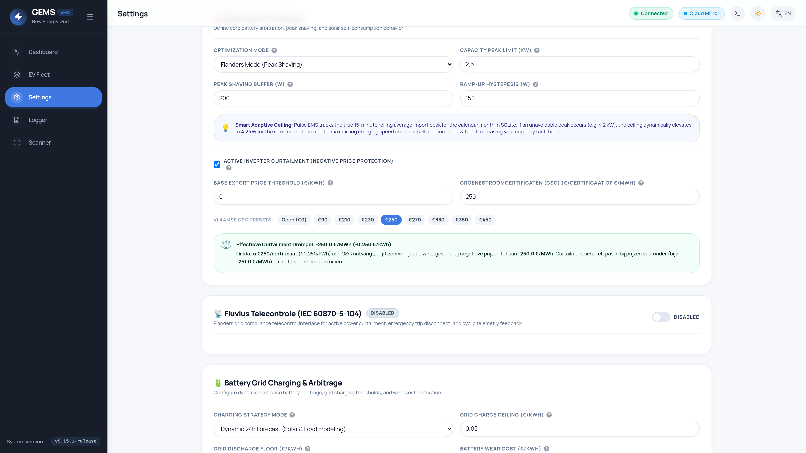
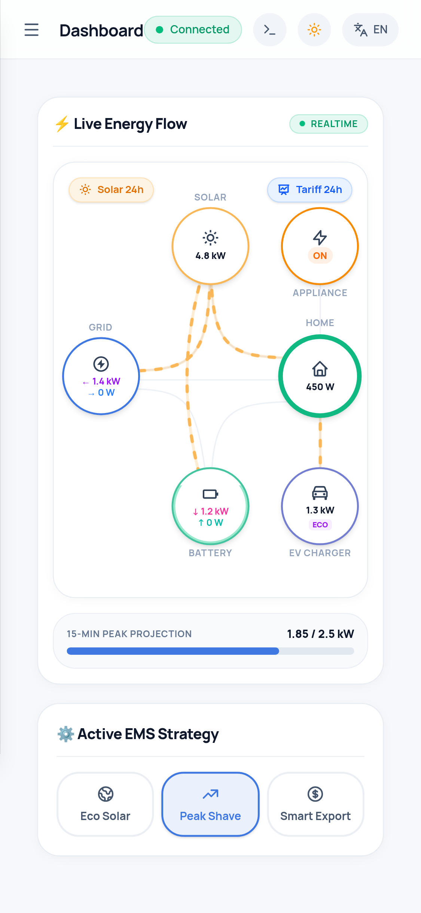

GEMS User Manual

- 1. Welcome to GEMS
- 2. The Interactive PowerFlow Hero
- 3. Click-to-Reveal History Deep Dives
- 4. Managing EV Charging Modes
- 5. Home Battery Storage & SOC
- 6. Dynamic Tariffs & Negative Prices
- 7. Flemish GSC Subsidy Protection
- 8. Smart Relays & Heat Pump Automation
- 9. Energy Reports & PDF Exporting
- 10. Mobile Access & Tablet Kiosk
- 11. Homeowner FAQ & Tips
1. Welcome to GEMS
GEMS (Grid Energy Management System) is your autonomous home energy manager. Installed in your electrical cabinet on a dedicated microcomputer (Raspberry Pi 5 with ultra-fast NVMe storage), GEMS runs 100% locally inside your home.
Unlike cloud-dependent commercial systems, GEMS has zero recurring subscriptions, keeps all your energy data private on your own network, and keeps running even during internet outages. It continuously balances solar generation, home battery charging, domestic appliance consumption, and electric vehicle charging to minimize your electricity bills.
2. The Interactive PowerFlow Dashboard
The heart of GEMS is the animated PowerFlow Chart on your main dashboard. It visually illustrates every watt flowing between your energy components in real-time:
Understanding the PowerFlow Nodes
| Node | Visual Color | What It Represents |
|---|---|---|
| Solar | Amber / Gold | Real-time PV generation from your solar panels and inverters. |
| Battery | Emerald Green | Current charging power (arrow down ↓) or discharging power (arrow up ↑) and State-of-Charge (SOC %). |
| Grid | Cobalt Blue | Active utility grid interaction. Shows power imported from the grid or power exported into the grid. |
| Home | Teal Green | Current total household consumption (kitchen, lights, electronics, HVAC). |
| EV Charger | Purple | Power delivered to your electric vehicle and the active charging mode (e.g. ECO). |
| Appliance / Relay | Orange | SG-Ready Heat Pump or domestic hot water boiler state (ON / OFF). |
3. Click-to-Reveal Historical Deep Dives
Every circle on the PowerFlow diagram is interactive! Clicking any node opens a dedicated analytical view showing detailed telemetry, 24-hour charts, and technical parameters for that specific component.




4. Managing EV Charging Modes
GEMS coordinates directly with your EV charger to optimize charging based on solar production, capacity tariffs, and dynamic electricity prices. Chargers can connect via Modbus TCP (preferred) or Native OCPP 1.6-J / 2.0.1:
Connecting your charger via Modbus TCP provides instantaneous sub-second current throttling, allowing GEMS to react immediately when household appliances turn on or solar dips.
Company Car & Split-Billing Compatibility: If you use an employer charge card or billing subscription (e.g. E-Flux, Road, Optimile, Easee Cloud), your charger can continue using its cloud OCPP connection for billing while GEMS optimizes charging locally via Modbus TCP.
| Charging Mode | Description & Operation | When to Use |
|---|---|---|
| ECO / Solar Only | Charges exclusively using excess solar power. Charging speed automatically adjusts between 6A and 16A/32A. If solar drops, charging pauses to avoid pulling costly power from the grid. | Ideal on sunny days or weekends when the vehicle is parked and you want 100% free solar kilometers. |
| FAST / Boost | Charges at the maximum rated current of your vehicle or circuit breaker (e.g. 16A or 32A three-phase, up to 11 kW or 22 kW), drawing from solar, battery, and grid simultaneously. | Use when you need to depart urgently with a full battery. |
| Smart Dynamic | Automatically schedules charging during the lowest-priced hours of your dynamic Day-Ahead electricity contract (often between 01:00 and 05:00, or negative price hours midday). | Ideal during winter months or cloudy days with dynamic energy contracts. |
5. Home Battery Storage & Peak Shaving
Your home battery (e.g. Huawei LUNA2000, BYD, Victron) acts as a flexible buffer. GEMS intelligently manages your battery according to three principles:
- Solar Buffering: Storing daytime solar yield to power your home during the evening and night.
- Peak Shaving: If heavy domestic loads (oven, heat pump, tumble dryer) spike above your Flanders capacity tariff ceiling (e.g. 2.5 kW), the battery instantly discharges to cap the grid draw.
- Smart Adaptive Ceiling: If an unavoidable high power spike occurs (e.g. 4.2 kW), GEMS dynamically elevates its ceiling to 4.2 kW for the rest of that month, maximizing your charging speed without incurring any extra capacity fees!
6. Dynamic Tariffs & 24-Hour Effective Tariff Curve
If you have a dynamic electricity contract (such as TotalEnergies Pixel Dynamic, Mega, Bolt, or Engie Dynamic), electricity prices change every hour based on the European EPEX Spot market.

What are Negative Electricity Prices?
On sunny and windy days, excess renewable energy across Europe can push wholesale electricity prices below zero. Under dynamic contracts, exporting power during these hours can result in feed-in fees (you have to pay to export power!).
How GEMS Protects You:
- Absorb: GEMS first directs excess solar to charge your home battery to 100% and speeds up EV charging.
- Thermal Boost: GEMS turns on domestic hot water boiler elements or signals your heat pump to store thermal heat.
- Curtail: If batteries and vehicles are full, GEMS actively curtails solar inverter output to match your household consumption, preventing costly export penalties!
7. Flemish GSC Subsidy Protection
Homeowners in Flanders with solar panels installed before 2021 often receive Groenestroomcertificaten (GSC) (green certificates) worth €90, €250, €350, or €450 for every 1,000 kWh of solar energy produced.
Simple systems blindly shut down solar inverters whenever the feed-in tariff is negative (e.g. -€0.10/kWh). But if you receive €250/certificaat (€0.250/kWh) in GSC subsidy, you are actually still earning a net +€0.150/kWh!
GEMS knows your GSC value. It only curtails your inverter if the negative injection penalty outweighs your subsidy certificate earnings (e.g. below -250.0 €/MWh), guaranteeing you never lose subsidy revenue!

8. Smart Relays & Home Automation
GEMS supports smart switches and contactors (like Shelly Pro 2 or Shelly Plus 1PM) to turn heavy household appliances on or off automatically:
- Hot Water Boilers: Heated during the cheapest dynamic hours or with free midday solar surplus.
- SG-Ready Heat Pumps: Boosted to maximum thermal storage when excess solar exceeds your configured threshold (e.g. 1,200 W for 10 minutes).
9. Energy Reports & Data Exporting
GEMS makes it easy to review and share your energy performance:
- Automated Weekly Email: Receive an email every Sunday evening summarizing total solar yield, grid import/export, and battery utilization.
- Visual PDF Reports: Download printable PDF Energy Reports for any day, week, month, or year directly from the dashboard.
- Technical Logs: Export complete SQLite event logs for technician review via the Logger UI.
10. Mobile Access & Tablet Kiosk
GEMS is designed as a responsive Single Page Application. It adapts cleanly to smartphones, tablets, and dedicated wall-mounted touchscreen displays:

Open your mobile browser (Safari on iPhone, Chrome on Android), navigate to http://ems.local, tap Share (or the three dots menu), and select "Add to Home Screen". GEMS will launch as a standalone fullscreen app without browser address bars!
11. Frequently Asked Questions & Homeowner Tips
Q: What happens if my internet connection goes down?
GEMS runs 100% locally on your home network. Even if your internet is completely disconnected, peak shaving, solar self-consumption, battery charging, and EV charging controls continue running without interruption.
Q: How do I access GEMS when I am away from home?
For security reasons, GEMS does not open insecure ports to the public internet. You can access GEMS securely from anywhere using Raspberry Pi Connect or a local VPN (such as Tailscale or WireGuard on your home router).
Q: When does the Flanders capacity peak reset?
The capacity tariff billing cycle resets on the 1st day of every calendar month at 00:00. GEMS automatically begins tracking the new month's baseline peak.